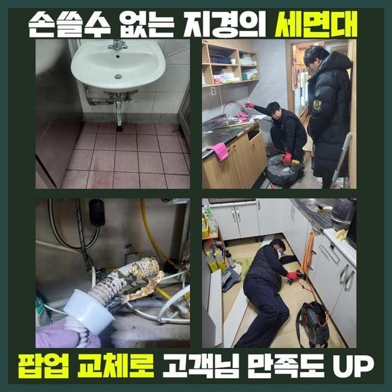
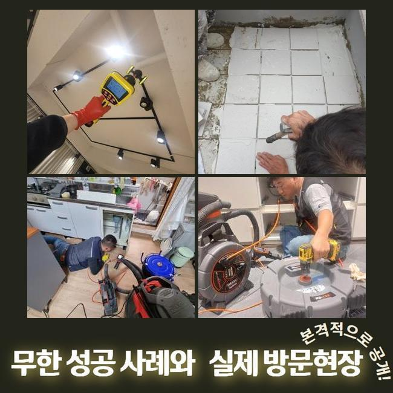
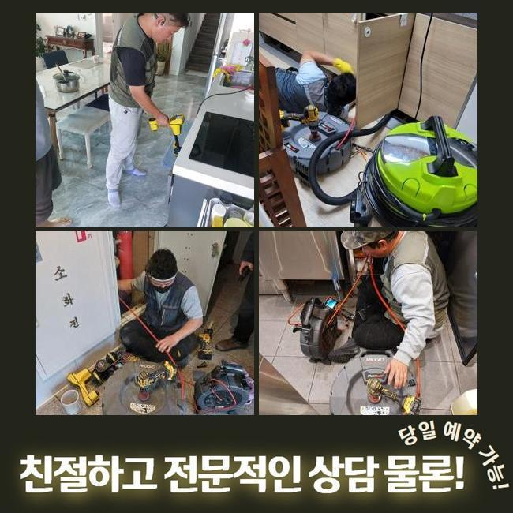
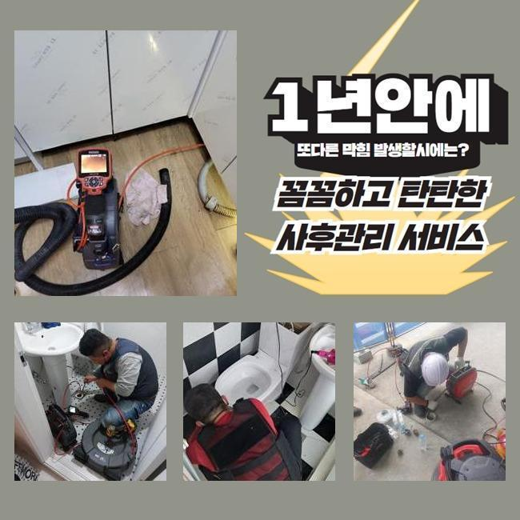
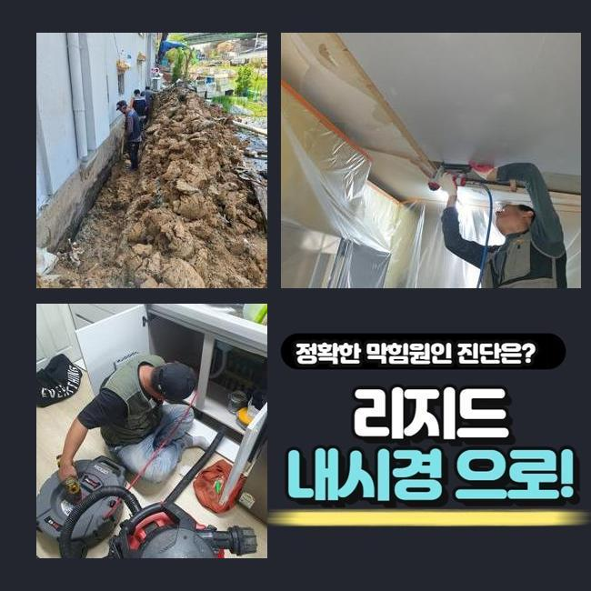
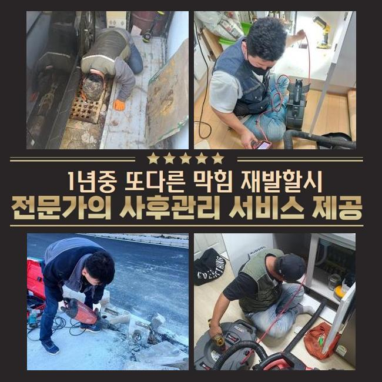
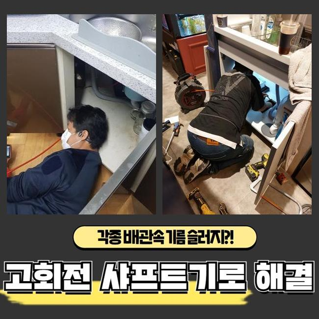

🏠 용산 한강로3가화장실하수구막힘 도원동 맨홀역류 배관막힘뚫는업체
용인 원동 하수구막힘 전문 시공 후기

📋 작업 개요
- 위치: 용인 원동, 원동, 용인
- 서비스 유형: 하수구막힘, 배관막힘, 맨홀막힘, 역류해결, 뚫는업체, 배관청소, 고압세척, 설비공사
- 작업 일시: 2025. 1. 1. 11:34
- 업체명: 하수구수사대 (010-5615-2118)
🔍 문제 상황
용산 한강로3가화장실하수구막힘 도원동 맨홀역류 배관막힘뚫는업체
저희들은 하수관쪽의 여러종류의 작업을 진행하고 있답니다
배관전문가가 상시적으로 업무대기하고 있고 의뢰자께서 겪고계신 문제들에 바로바로 응대해드린답니다
이번 글에서는 식당에서 발생한 물막힘 처치 과정을 말씀드려보도록 하겠습니다
지난주 의뢰를 해주셨던 위치는 푸드코트 건물입니다
주방쪽 배수구가 막혀버렸으며 그것에 더하여 공용화장실 통수마저 안되는 형국이었답니다
해당지역쪽에서 근무중이었던 담당자가 곧바로 출동하였으며 적합한 조처를 시행하기로 합니다
주방막힘과 화장실의 배수구막힘이 발발한 데는 보양식 전문식당이었습니다
주방공간에선 많은 음식찌꺼기가 취급되므로 관로 정체가 빈번하게 발생해요
그러므로 식당운영을 하고계신 경우엔 그에 대한 여러 방법들을 모색하시곤 하는데요
오랜기간 사려깊게 이용하셨더라도 느닷없이 큼지막한 음식물쓰레기가 혼입된다면 물막힘이 쉽게 발발하므로 조심해야 해요
금번 소개드릴곳은 어떤 원인으로 고장이 생긴건지 세밀하게 확인하도록 하겠습니다
우선적으로 주방의 배관시설부터 파악하기로 합니다
한식집은 일반 가정의 배수시설과는 상이한 모습을 띠며 배수트렌치의 사이즈도 상당히 크죠

🔎 원인 분석
💡 전문가 진단: 정밀 진단 장비를 사용하여 슬러지의 고착 여부를 판명하고 타격/세척 작업을 실시했습니다.
그러므로 처리가능한 수도량도 커질수밖에 없는건데요
그렇기 때문에 통상적인 주거장소의 배수기능 테스트를 기준해서 이상을 결정내려서는 제대로된 파악이 어렵고 그것에 적합한 물의양을 넣어서 정밀하게 사태를 파악해야 하는데요
이런 공정을 올바르게 시행하지 않는다면 몇달후에 사태가 또다시 일어날수가 있어요
조사를 해보았고 정상적으로 물빠짐이 안되고 있다는 것을 파악하게 되었죠
아주 조금씩 내려갔지만 주방사용을 하기엔 힘겨운 상태였어요
그다음은 관로안으로 배관내시경을 넣어서 분명하게 정황을 조사해보기로 하였습니다
기름성분은 물론이고 크고작은 석회성분들이 가득한 형국이었습니다
하수관 안으로 들어가게되면 안될것들이 누적되어서 고장을 일으킨거죠
이런 부분들에 관하여 하수관에 유입되어선 안되는걸 알려드리겠습니다
이것들을 기억해두셨다가 일상에 활용해보실것을 권장합니다
기름기는 배수과정에서 고착화되고 그로인해 배수관에 붙어버릴 가망성이 크죠
그러하기에 반드시 휴지 등으로 제거하고 세척하는게 중요하답니다
또한 기름을 별도로 처리하는 과정도 효율적으로 사용하시는게 합당합니다
매장에서 손님들에게 제공되는 커피찌꺼기들도 배관정체를 유발합니다
원두가루는 기름기를 빨아들이는 특징이 있기에 배관속에서 뒤엉키기 쉽답니다

🔧 작업 과정
그러므로 일반쓰레기로 분류하여 처분하는게 바람직해요
설거지를 하는도중 남긴 음식들을 주방의 배수관으로 폐기한다면 관로에 누적될 가망이 크답니다
다양한 양념성분은 크기가 잘기에 트랩을 관통하여 하수관으로 들어갈수 있으므로 분리해서 버리는것이 바람직해요
조리도중에 남게된 전분도 관로에 곧바로 폐기한다면 응축되어서 관의 정체를 일으킬수 있죠
그러하기에 이러한 것들은 필수적으로 개별처리하여서 배수시설을 안정적으로 관리하는게 좋겠습니다
내시경기기를 활용하여 깊은층까지 조사하였더니 공용관로도 정체가 생겼으리라 예상되었으며 별개로 진단하기로 결정합니다
일단은 고객분의 음식점의 배수관 세척을 해야하겠죠
백숙을 끓이는 장소다보니 여타 업장들과는 달리 기름성분이 상당량 누적되어 있었고 그외의 노폐물들과 믹스되어서 혼잡한 상태였습니다
그상황이 장시간 유지되면서 배관과 하나가 돼버린 형국이었죠
분쇄기기를 써서 주방배수관의 초반 세정시공을 시행하기로 했습니다
노즐부위는 현장상황에 따라 교체하여 시공할때도 있는데 통상적으로 쇠줄로 만들어진 체인노커를 쓰곤하죠
케이블의 끝부분에 해당하는 관통헤드가 결속되어서 배관안에 넣고 돌리면 고속도로 돌아가면서 누증된 이물질들을 파쇄시키는 공정을 수행하죠
통상 샤프트기기를 활용하면 웬만한 이물들은 해결돼요
그렇긴하지만 앞선 진단을 기반으로 이지점은 공용관로까지 찌꺼기가 전파되었다는걸 파악한바가 있는데요
그러한 경우엔 개별하수관의 세정만으로 근원적인 트러블이 처리되지 않죠
세정된걸로 보일수는 있겠으나 공용하수도가 정체를 이루고 있다면 결과적으로 재차 배수관이 막히게 된답니다
개별 하수관 세정을 끝마친뒤 지하실쪽에 자리잡은 공용관을 검사하기로 했죠
내시경설비를 투입하니 두텁게 누증된 검정색의 잔재들이 가득하였답니다
긴시간 퇴적을 이룬것으로 생각되었고 크기도 크다보니 더더욱 오물이 많아진거에요
해당 위치를 고속물세척으로 해결하기로 하였으며 2시간30분간 청소를 진행하였어요
공동관까지 분쇄청소를 끝내고 의뢰인분의 닭요리집으로 올라가서 배관 물내림과 욕실까지 시험을 실시했더니 정말 깔끔하게 통수가 되어서 말끔하게 소멸되었네요
이번에 방문했던 곳은 상당량의 기름성분과 식재료 잔재들이 막힘을 일으켰던 이유였고 기계실의 공동관까지 정체가 이루어져있었기에 형편이 심각했답니다
해당 문제를 분쇄기기와 물세척공정으로 순서에 맞게 정비했고 개운하게 개통된 정황을 확인할수가 있었답니다
작업을 종료하고 차후 일어날수 있는 고장과 알고있으면 도움되는 파이프보존 대책들을 설명해 드렸어요


✅ 작업 완료
이와 관련하여 추가적인 질문을 하셔서 살뜰하게 설명해 드렸어요
공사를 어설프게 이행한다면 얼마뒤 하수관에 고질적인 문제들이 생겨날수 있답니다
그렇기 때문에 정확한 시공방식을 접목시켜 해결해내려는 방침이 중요하답니다
그것을 위하여 여러 변수를 염두에 두고 수리를 실행해야 한단걸 안내드립니다
식당 등에서 급작스레 관로막힘이 발발한다면 운영상에 커다란 문제가 생기겠죠
그러니 미세하게나마 문제점이 목격되었다면 방치하지 마시고 배관수리업체에 전화하시길 부탁드립니다




⚠️ 하수구 배관 막힘 예방 및 관리 가이드
- ✅ 머리카락, 비닐, 물티슈 등 물에 분해되지 않는 이물질은 하수구 유입을 절대 금지해 주세요.
- ✅ 하수구 거름망을 씌우고 모여진 이물질은 주기적으로 쓰레기통에 바로 비워주셔야 합니다.
- ✅ 배관 노후가 심할 경우 이물질이 더 쉽게 걸리므로 주기적인 배관 세척(고압세척 등)을 권장합니다.
- ✅ 작업 후 1년 이내 재발 시 하수구수사대에서 무상 A/S 보증 서비스를 제공합니다.
💡 핵심 정리
- 확실한 장비 작업(내시경 점검 및 샤프트 스케일링)으로 원인을 뿌리 뽑습니다.
- 작업 후 1년 이내에 동일한 부위 재발 시 100% 무상 A/S 서비스를 보장합니다.
- 서울 · 경기 · 인천 전 지역에 24시간 언제든 긴급 출동할 수 있도록 항시 대기 중입니다.
❓ 자주 묻는 질문 (FAQ)
🚨 용인 원동 하수구막힘 문제로 고민이신가요?
정확한 원인 진단과 확실한 시공으로 재발 없는 해결을 약속드립니다.
24시간 긴급 출동 | 서울 · 경기 · 인천 전지역 | 1년 내 재발 시 무상 A/S